Stuff. Unlinked Repository of ...
Stuff !.
Sep02, 2005. (Part 3) Construction order
http://www.athelstane.co.uk/ballanty/manocean/ocean08.htm
The keel is the first part of a ship that is laid. It is the beam
which runs along the bottom of a boat or ship from one end to the other. In
large ships the keel consists of several pieces joined together. Its uses are,
to cause the ship to preserve a direct course in its passage through the water;
to check the leeway which every vessel has a tendency to make; and to moderate
the rolling motion. The keel is also the ground-work, or foundation, on which
the whole superstructure is reared, and is, therefore, immensely strong and
solid. The best wood for keels is teak, as it is not liable to split.
Having laid the keel firmly on a bed of wooden blocks, in such a position
that the ship when finished may slide into the water stern foremost, the
shipbuilder proceeds next to erect the stem and stern posts.
The stem-post rises from the front end of the keel, not quite
perpendicularly from it, but sloping a little outwards. It is formed of one or
more pieces of wood, according to the size of the ship; but no matter how many
pieces may be used, it is always a uniform single beam in appearance. To this
the ends of the planks of the ship are afterwards fastened. Its outer edge is
called the cut-water, and the part of the ship around it is named the bow.

The stern-post rises from the opposite end of the keel, and also
slopes a little outwards. To it are fastened the ends of the planking and the
framework of the stern part of the ship. To it also is attached that little but
most important part of a vessel, the rudder. The rudder, or helm, is a
small piece of timber extending along the back of the stern-post, and hung
movably upon it by means of what may be called large iron hooks-and-eyes. By
means of the rudder the mariner guides the ship in whatever direction he
pleases. The contrast between the insignificant size of the rudder and its
immense importance is very striking. Its power over the ship is thus referred to
in Scripture,—“Behold also the ships, which, though they be so great, and
are driven of fierce winds, yet are they turned about with a very small helm,
whithersoever the governor listeth.” The rudder is moved from side to side by
a huge handle or lever on deck, called the tiller; but as in large ships
the rudder is difficult to move by so simple a contrivance, several ropes or
chains and pulleys are attached to it, and connected with the drum of a wheel,
at which the steersman stands. In the largest ships two, and in rough weather
four men are often stationed at the wheel.
The ribs of the ship next rise to view. These are curved wooden beams,
which rise on each side of the keel, and are bolted firmly to it. They serve the
same purpose to a ship that bones do to the human frame—they support and give
strength to it as well as form.
The planks follow the ribs. These are broad, and vary in thickness
from two to four inches. They form the outer skin of the ship, and are fastened
to the ribs, keel, stem-post, and stern-post by means of innumerable pins of
wood or iron, called tree-nails. The  spaces between the planks are caulked—that is, stuffed with oakum;
which substance is simply the untwisted tow of old and tarry ropes. A
figure-head of some ornamental kind having been placed on the top and front of
the stem-post, just above the cutwater, and a flat, ornamental stern, with
windows in it to light the cabin, the hull of our ship is complete. But the
interior arrangements have yet to be described, although, of course, they have
been progressing at the same time with the rest.
spaces between the planks are caulked—that is, stuffed with oakum;
which substance is simply the untwisted tow of old and tarry ropes. A
figure-head of some ornamental kind having been placed on the top and front of
the stem-post, just above the cutwater, and a flat, ornamental stern, with
windows in it to light the cabin, the hull of our ship is complete. But the
interior arrangements have yet to be described, although, of course, they have
been progressing at the same time with the rest.
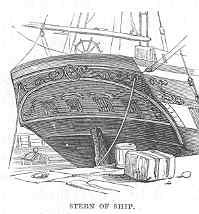
(Oh thanks a lot - that doesn't help. Which goes first ceiling or planking?)
The beams of a ship are massive wooden timbers, which extend across
from side to side in a series of tiers. They serve the purpose of binding the
sides together, of preventing them from collapsing, and of supporting the decks,
as well as of giving compactness and great strength to the whole structure.
The decks are simply plank floors nailed to the beams, and serve very
much the same purposes as the floors of a house. They also help to strengthen
the ship longitudinally. All ships have at least one complete deck; most have
two, with a half-deck at the, stern, called the quarter-deck, and another
at the bow, called the forecastle. But the decks of large ships are still
more numerous. Those of a first-rate man-of-war are as follows—we begin with
the lowest, which is considerably under the surface of the sea:—
Sep02, 2005. (Part 2) Scaffold and construction look
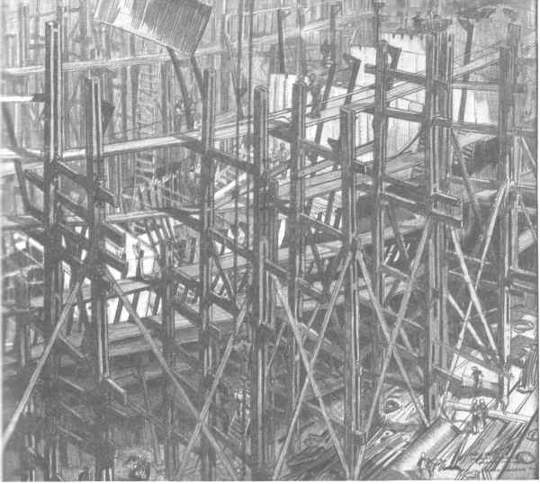
Building an Australian
"Tribal" by B3/154. Cradled in the
trellis of the slipway gantries, the shell of the "Tribal" class
destroyer Warramunga takes shape at Cockatoo Island dockyard, Sydney, New South
Wales, where the ship was built. http://www.diggerhistory2.info/ran/1943/chapter02.htm
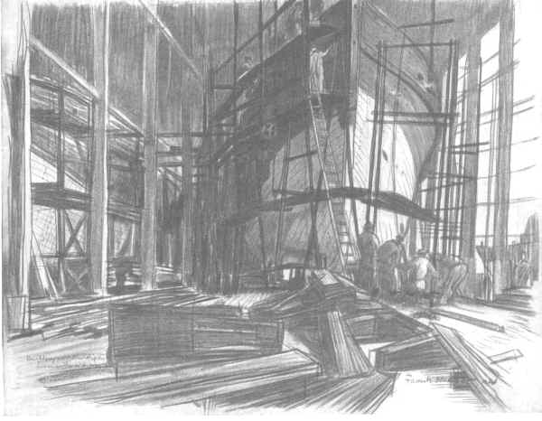
WOODEN SHIP BUILDING WESTERN AUSTRALIA
By B31154. Numbers of wooden ships are being built
in Australia, and the picture shows a completed hull, almost ready for launching
at a yard in Western Australia. Part of the first coat of paint has been
applied.
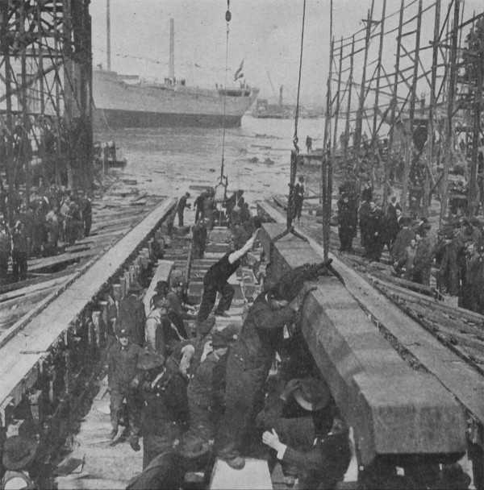
Laying the keel for a new ship at an American shipyard http://www.firstworldwar.com/photos/graphics/ww_keel_laying_01.jpg
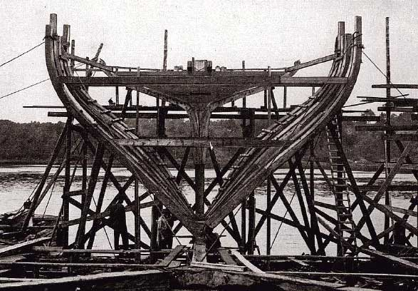
Laying the keel of a wooden ship
at Bath, Me.
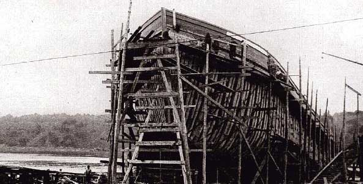
First World War wooden ship under construction. http://www.firstworldwar.com/photos/graphics/cnp_wooden_ship_hull_01.jpg
Sep02, 2005. Construction sequence
I think the roof wants to go on ASAP so that internal fit-out can begin
before the hull is closed up. However, using solid framing (like Brunel's Great
Western but with rebated anti-hogging chocks fitted between), the frames want to
expand longitudinally. To prevent this, either the outside planking or the
inside ceiling must be attached first. I vote for ceiling first, here's
why;
- + Not slavishly copying 19th cent procedure which did planking first and
internals last
- + The longer construction period of the Ark would benefit from a late
application of planking so save it from excess weathering/shrinkage.
- + Noah's Ark is busier inside than corresponding 19th cent wooden ships
that tended to have a pretty boring interior. So interior is a larger
proportion of the work, and the time.
- + The Ark is coated with pitch inside and out, which could easily mean
pitching the frames before attaching planking. With planking that is solid
and pitched, it is already weathertight, so the exterior planking
(watertight) can go last.
- - Have to drive frame chocks from outside.
Now - about scaffolds. There is no real need for a continuous scaffold until
external planking is ready for fitting. Good access is required at the frame
fitting to drive connecting trunnels - but this might be done with a mobile
scaffold that keeps up with the progression of the framing. The very long
parallel mid-section lends itself to a virtual "mass-production" frame
erection here. With standard frames ready to go, the framing would be up in a
very short time (a few months).
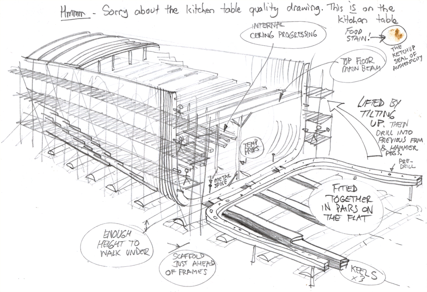
Treenailed frame chocks
Also, the frame chocks might be better as trunnels - (like a treenailed
scarph) since this is much easier to fit, and the hole can be drilled after the
frames are fitted together without any need to perfectly match the mating
rebates. It would be less efficient and tend to open the frame-to-frame joint
under shear, but this should be acceptable considering the substantial planking
and ceiling. Another advantage is that the frame chocks by treenails is almost
the same operation as the treenails used in planking - and done at the same
time.
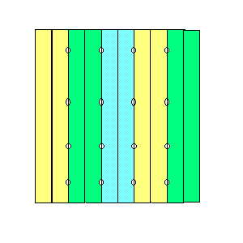
July 5, 2005. Frame chocks based on ABS wave shear
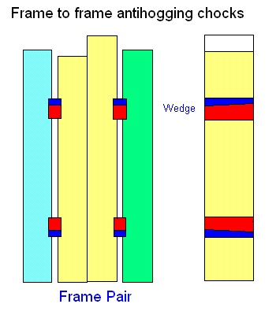
ABS shear force is quite high, http://www.worldwideflood.com/ark/hull_calcs/wave_bm1.htm
and difficult to absorb with trunnels - so here is a modification of the frame
chock system which was used prior to the introduction of iron bracing. The
chocks are let in to frames and wedged vertically. This method reduces
interference with plank trunnels.
Now, that's quite a lot of shear ... 13247 kNm. I was wanting to transfer all
the shear between frames but it is too much - definitely couldn't do it with
trunnels alone. The highest shear capacity I can see would be chocks let into
the frame and wedged vertically to drive against shoulder of frame socket.
(Maybe 1.5 inches deep or so). Need about 10 per side and you'd be pretty much
up to the shear force. I'm not sure how Brunel fitted his solid framing or
whether he had substantial connection between each frame pair, but hammering 100
huge trunnels to pin adjacent frames might be a daunting task - not to mention
the trunnel hole interferences with holes for planking, ceiling, knees and
adjacent frames... At least this way is not much different and logically
superior to a known system, and could be fitted the same way (late in the
construction).
Fitting of chocks: (Donald McKay spec) Crothers p149: "Chocks 5"
thick between frames at every butt, driven from the inside to within
2" of the planking...". (allowing air gap obviously). Driven from
inside then this is prior to ceiling.
Brunel's solid-framed Great Western - Illustration from Denis Griffiths. A
long bolt can be see thru floors, but no indication of how he attached adjacent
frame pairs. Considering the admiralty system (inboard) iron bracing, Brunel may
have used solid framing for the rigidity in compression when brace is in
tension. otherwise the frames are only kept apart by the planks and ceiling -
indirectly though trunnels, bolts.
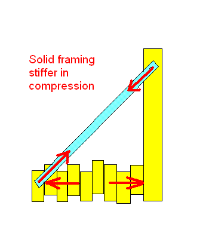
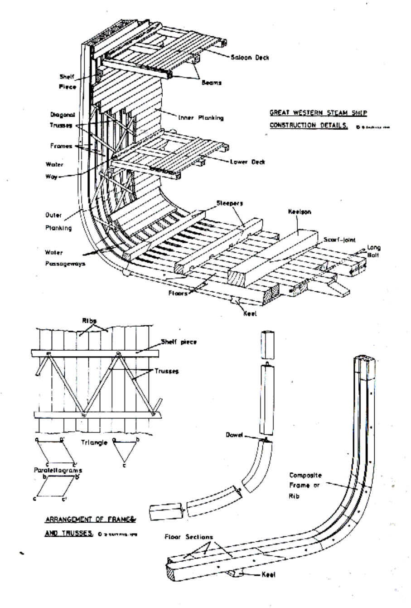
June 30, 2005. Midsection

June 29, 2005. Midsection Explanation...

June 28, 2005. Marine Fouling
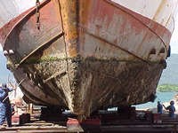


Hull fouling. Special paints are used today, and copper plating was used on
wood boats. So lack of anti-fouling, tropically warm water and evidence of
extensive flood blooms (See A Snelling;
http://www.answersingenesis.org/tj/v8/i1/chalk.asp ) would indicate
significant that fouling could occur even in the few months afloat.
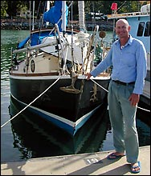
Graham Cox considers cleaning his yacht's hull is a necessary evil. "Ideally,
the antifouling paint on a yacht should be renewed every 12 months," says
Graham. "But this costs about $1,000 for a 12-metre boat, plus associated
maintenance costs. So, many people, including myself, only dry-dock their yacht
once every two years. It's common practice to scrub any fouling organisms off
the hull during the second year. Otherwise the boat starts getting sluggish when
you sail it."
http://www.reef.crc.org.au/publications/explore/feat53.html
Despite the anti-fouling paints and high speed of a modern ship, 12 months is
a typical period between dry-docking and cleaning the hull. The costs of the
extra fuel of a slower hull are weighed against the cost of dry-dock and
cleaning.
In the Russo-Japanese war (where Japan decimated the Russian
fleet) the Russians had travelled around Africa and through tropical waters to
reach the war zone. One commentator considered this to have slowed the ships in
the battle because of the accumulated marine growth during the voyage through
tropical waters.
2 to 3 months to foul the hull of Noah's Ark is
quite reasonable considering the warm and very alive environment.
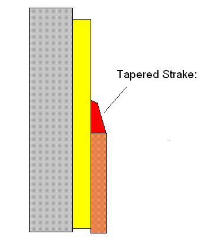
June 28, 2005. Tapered Strake. The last strake (plank) is full width
but tapers down to approx 1.5" final step. (A full taper would be fragile
at the tip).
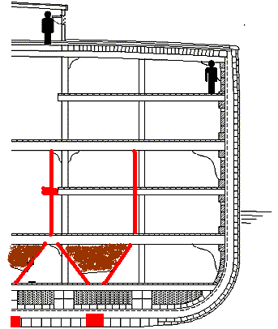
June 27, 2005. 3 keel arrangement applying stanchion loads direct to
built up keel/keelson areas. The "awkward" diagonal timbers form the sides of
grain storage bins. Alternatively the area could be used for one continuous
stack of grain and feed bags, where awkward shapes don't matter. The stepped
stanchion positions in the 2nd deck area are designed to collect more light
while keeping a trivial distance between stanchion centres. This was sometimes
used in wood ship building to make it easier to fix the through the beam into
the end of the stanchion.
Pictures
A rough graphics experiment. That's a collapsing geyser in the background.
The sea is a tidal current doing strange things off the coast of Japan. Yes that
is a ship in the background - whoops.
A ripper tidal rip - off the coast of Japan.
{kind=link}
{kind=link}
{kind=link}
{kind=link}